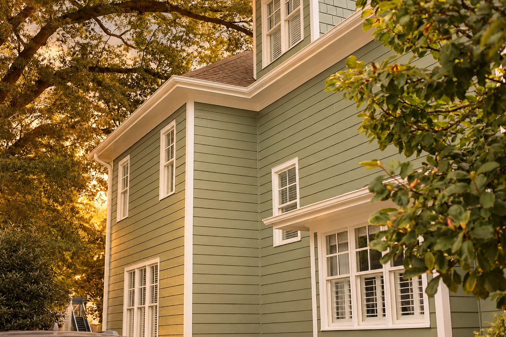

Help for Leaks and Roof Damage
Roof Repair in Arden and Asheville
Have a leak or visible roof damage? Request an inspection and estimate. Get a Free Estimate
Help for Leaks and Roof Damage
Have a leak or visible roof damage? Request an inspection and estimate. Get a Free Estimate
Roof problems rarely improve on their own. A lifted shingle, cracked flashing, damaged pipe boot, or small opening around a roof transition can let water reach the layers below the visible roofing. Once moisture gets inside, it may travel along decking, framing, or insulation before appearing as a stain in the house.
Arden Roofing provides residential roof repair throughout Arden, Asheville, and nearby Western North Carolina communities. We begin by looking for the likely source of the problem and the surrounding condition of the roof. When the issue is reasonably contained, a targeted repair can often address the immediate failure without replacing roofing that is still performing.

A useful roof repair starts with understanding why the roof failed. We look beyond the most visible symptom so the repair can address the likely entry point and nearby materials.
Interior water stains can come from several roof areas, and water may travel before becoming visible. We inspect likely entry points, including roof penetrations, flashing, valleys, damaged shingles, and transitions. The goal is to narrow down the cause and identify a practical repair when possible.
Wind, falling debris, age, and foot traffic can damage individual shingles or sections of roofing. Missing, creased, cracked, or displaced shingles may expose the layers below to weather. We evaluate the affected area and surrounding shingles to determine whether a localized repair is reasonable.
Flashing helps direct water away from chimneys, walls, valleys, and other roof transitions. Loose, deteriorated, poorly sealed, or damaged flashing is a common source of leaks. Repair work may involve correcting the affected transition and restoring a dependable path for water to move off the roof.
Plumbing vents and other penetrations create openings that must remain properly sealed to the roofing system. Rubber components and sealants can deteriorate over time. We inspect the surrounding area for signs of wear or moisture entry and repair the failed component when appropriate.
Mountain thunderstorms and gusty weather can loosen roofing materials, move debris, and expose weak areas. Damage is not always obvious from the ground. If a recent storm has raised concerns, an inspection can help determine whether there is a localized repair need or a broader roofing issue.
Sometimes a leak reveals damaged or softened roof decking beneath the surface materials. When the affected area is limited, repair work may involve removing roofing around the problem, replacing compromised material as necessary, and rebuilding the section so the roof can shed water correctly.
| Service | Estimated Cost | Average |
|---|---|---|
| Minor shingle or seal repair | $300-$700 | About $500 |
| Flashing or penetration repair | $450-$1,200 | About $800 |
| Larger localized roof repair | $800-$2,500+ | Varies by scope |
These are general planning ranges, not quotes. Roof height, slope, access, material type, hidden damage, and the size of the affected area can change the price. A site inspection is needed for a project-specific estimate.

We look for the likely source of the problem rather than assuming the visible symptom tells the whole story.
When a repair is a reasonable option, we explain what the repair is intended to address and any limitations we can identify.
A repair is not only about replacing one visible piece. We consider nearby shingles, flashing, transitions, and decking conditions.
Our team works throughout the Asheville area and understands how rain, wind, tree cover, and changing temperatures affect local roofs.
If you have an active leak or visible roof damage, call (828) 305-4838 or request a repair estimate.
Free — no obligations

Share the location of a leak, missing shingles, visible damage, or any recent weather event that may be related.
We look at the problem area and surrounding roofing components to narrow down the likely cause.
If repair is appropriate, we outline the work we recommend and any conditions that could affect the scope.
We complete the agreed work and clean the immediate work area when the repair is finished.